David Carson
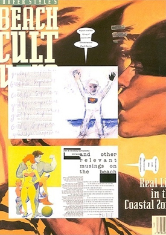
위는 1990년 창간한 'Beach Culture'라는 잡지다. 그는 한때 세계 서퍼랭킹 8위를 기록할 정도로 서퍼에 미쳐 있
었고, 그의 난해한 디자인은 다른 서퍼들에게 열광적인 호응을 얻기도 했다.
한편으로 그의 자유로운 타이포그래피사용은 가독성의 문제를 야기시킨다. 그에 대해서 그는 이렇게 답하였다.
“
중요한 것은 보는 사람의 관심과 흥미를 끄는 것,
일단 관심을 가지게 되면 읽는 것은 문제되지 않는다.
The important thing is to attract the attention and interest of the viewer
It doesn't matter to read once you're interested.
”
가독성이란 상대적이며, 독자에게 이미지를 먼저 심어주고 흥미를 유발시키면, 아무리 작은 서체라해도 집중해서 읽게 된다는 것이다.
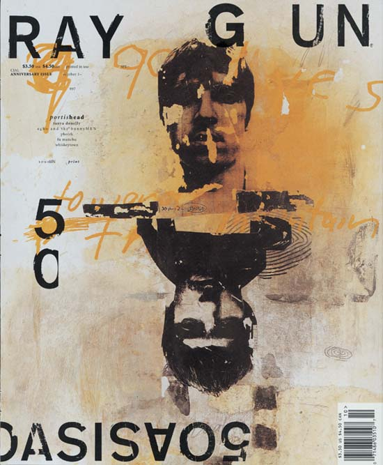
1992년 창간된 음악 잡지‘레이건(RAYGUN)’표지에서 보여준 그의 담대한 디자인은 미국 잡지디자인에서 새바람을 일으켰고, 이 작품으로 수많은 디자인상을 받았다. 같은 잡지인데도 타이포, 그리드의 통일성이 없다. 이러한 이유로 당신 기존의 디자이너들에게 이단아 취급을 받기도 했다. 하지만 형식상의 통일성을 해체했을 뿐, '레이건'이라는 이미지를 직관적으로 느낄수 있었다.
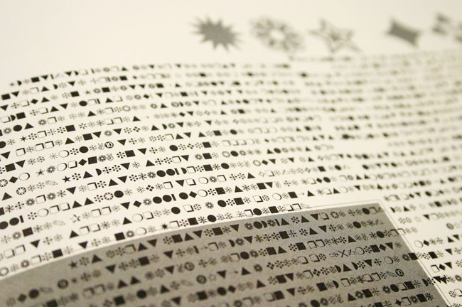
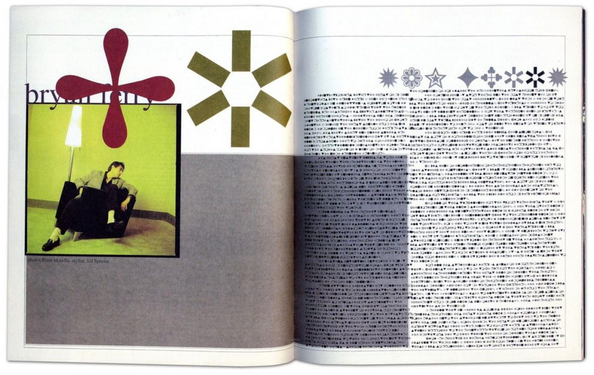
데이비드 카슨은 3년간 30여권 가량을 디자인하면서 당대 '잡지 디자인계를 대표하는 일인자'로서 '국제적인 스타'가 되었다. 그는 잡지에 관한 모든 고정관념을 과감히 탈피했다. 연습 삼아 그려본 것 같은 글자, 팩스나 복사기를 통해 얻은 것 같은 질감, 혹은 위로 차가 지나간 듯한 바퀴 자국처럼 거의 판독하기 어려운 상태로 레이아웃을 구성했으며 '브라이언 페리의 인터뷰 기사 디자인'에서 본문을 모두 픽토그래피 딩벳으로 처리했다.
*딩벳(dingbat): 폰트와 함께 사용하기 위해 고안된 부호나 심벌. 특수한 글꼴.
1995년 그가 만들어낸 스타일을 기리는 단행본 <그래픽 디자인의 한계를 넘어서: 데이비드 카슨의 그래픽 디자인>이 출간되었다. 이 책은 당시 젊은 디자이너들에게 엄청난 영향을 주었고, 전세계적으로 20만권이라는 그래픽 디자인 서적으로는 전대 미문의 판매량을 기록했으며 1997년 두 번째 책 <제 2의 시각: 그래픽 디자인의 한계를 넘어서, 그 이후>가 나왔다.
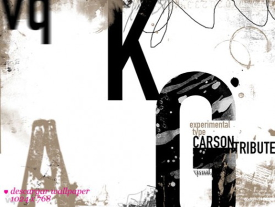
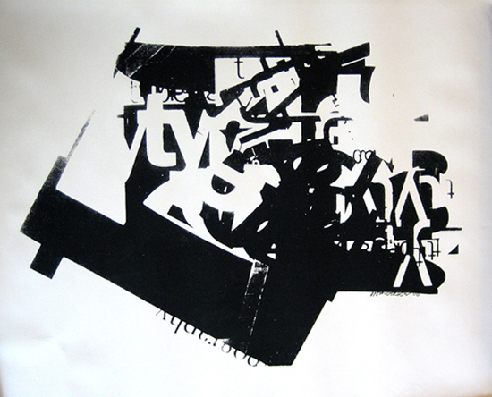
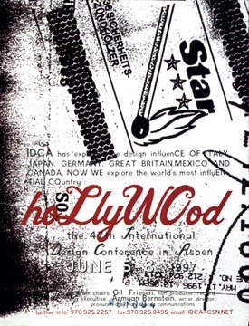
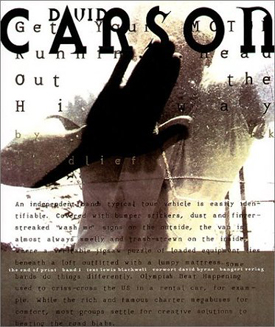
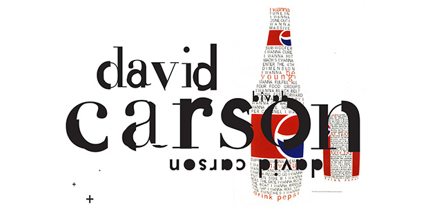
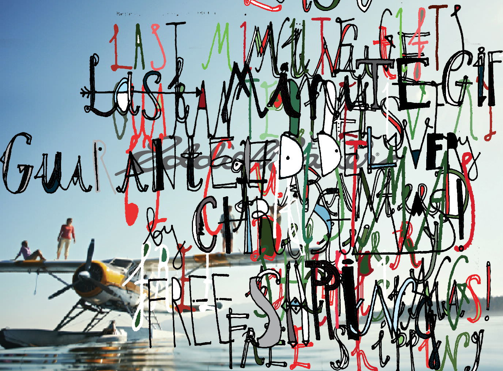
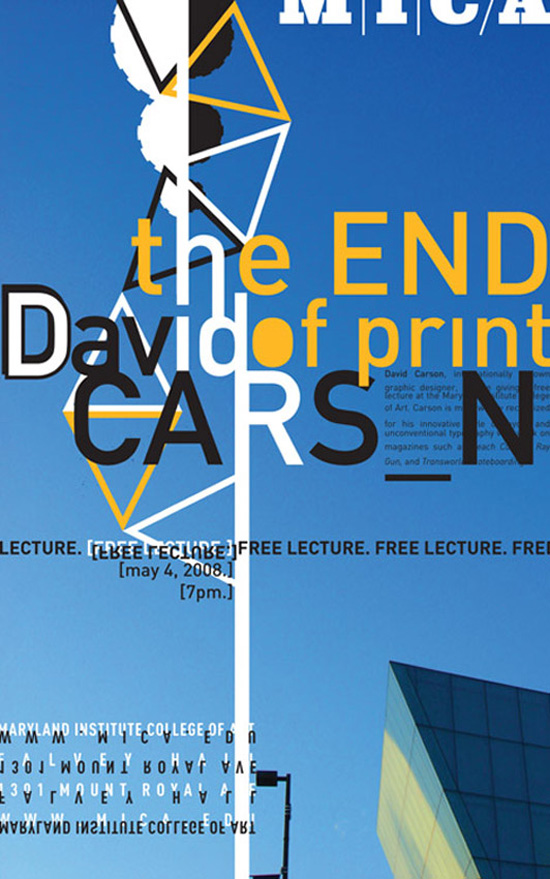